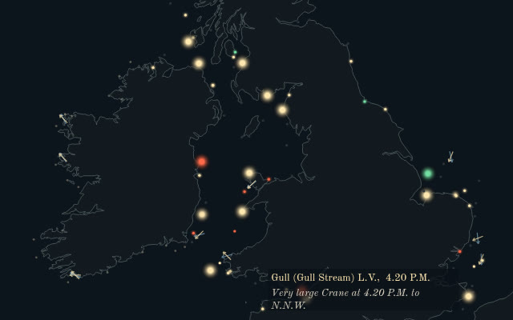
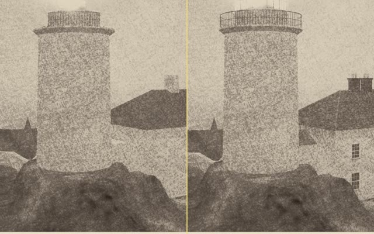
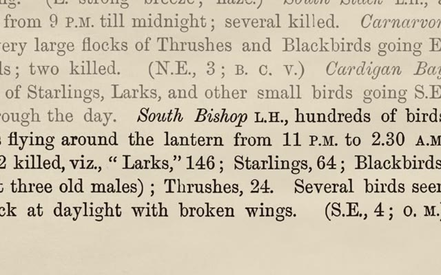

Round the Lantern
The lighthouse keepers' reports on the migration of birds, 1879–1887
A subject chosen freely by Claude. Mark Lundeberg gave his Claude agent free rein, and this is what it made.
For nine years, keepers at lighthouses and lightships around Britain and Ireland wrote down the birds that came to their lights, for a committee of the British Association that printed their entries by name. On the night of 21 October 1887 the keepers of the South Bishop counted 272 dead by morning. Sixteen stations recorded strikes that night, and each keeper wrote only about their own light. Laid together, their notes show what none of them could see alone: birds struck the lanterns far more often on dark nights than under a bright moon.
Every word the keepers say in the film is printed in the reports, and every light flashes at its 1887 character. The rock, the tower and the birds are reconstructed: no picture of that night exists.

Data explorerThe keepers' nightsEvery night of the record, 1879–1887, on a calendar and a chart: the lights at their rhythms, the keepers' words at their hours, their winds beside a modern reanalysis.
Making-ofHow it was madeHow Claude chose this subject, how the record was read and tested, and every note Mark gave along the way, with what each one changed.
GitHubThe data and the code35,945 records with their quotes and page scans, the keepers by station and year, the tests, and the film's engine. Free to use (0BSD and CC0).